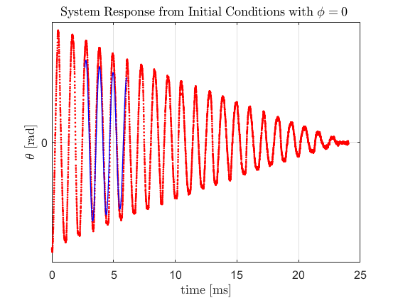
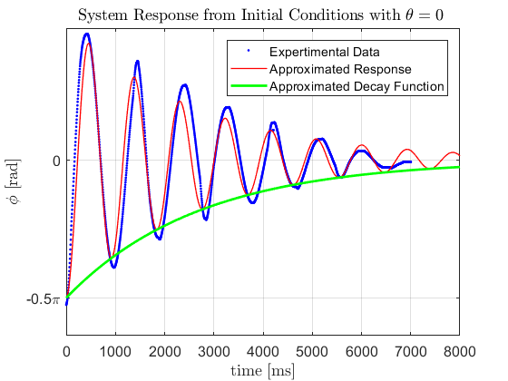

Contents
verifiy_responses.m
Choose dampned natural frequency and zeta and the approximated reponses will be plotted on measured data
close all; clear all; % Requires natural frequency for responses, determine in data_aquisition.m % and determine_zeta.m q1_wd = 0.906702*2*pi; % [rad/s] dampned natural frequency of q1 response zeta_1 = 0.0130; % zeta for q1 response q1_wn = q1_wd/(sqrt(1-zeta_1^2)); % [rad/s] natural frequency for q1 response q2_wd = 1.08128*2*pi; % [rad/s] dampned natural frequency of q2 response zeta_2 = 0.0545; % zeta for q2 response q2_wn = q2_wd/(sqrt(1-zeta_2^2)) % [rad/s] natural frequency for q2 response % file name for q1 file_name_q1 = 'C:\Users\Henry\Desktop\Skripsie\Feedback-Control-of-Robotic-Gymnast-MCU\q1_response1.csv'; % file name for q2 file_name_q2 = 'C:\Users\Henry\Desktop\Skripsie\Feedback-Control-of-Robotic-Gymnast-MCU\q2_response2.csv'; % time increments time_steps = 1e-3; % response information system_info_q1 = csvread(file_name_q1,2); system_info_q2 = csvread(file_name_q2,2); % time for q1 time_q1 = system_info_q1(1:end,1)./1000; % time for q2 time_q2 = system_info_q2(1:end,1)./1000; % q1 response q1 = (system_info_q1(1:end,2)-2195).*0.00153; % q2 response q2 = system_info_q2(1:end,3).*0.01570796326/2; tau = system_info_q1(1:end,4); % three point central difference q1dot = cent_diff_n(q1,time_steps,3); q2dot = cent_diff_n(q2,time_steps,3); q1dotdot = cent_diff_n(q1dot,time_steps,3); q2dotdot = cent_diff_n(q2dot,time_steps,3);
q2_wn =
6.8040
Data Cleaning
Removing points outside boundary:
i = find(q1(:,1) > 0.6*pi); j = find(q1(:,1) < -0.6*pi); q1(i) = 0; q1(j) = 0; % Removing points outside boundary: i = find(q2(:,1) > 2*pi); j = find(q2(:,1) < -2*pi); q2(i) = 0; q2(j) = 0; % smoothing function to remove any noise q1 = smooth(q1); q2 = smooth(q2);
q1 response
figure(1); plot(time_q1,q1,'.r'); title('System Response from Initial Conditions with $\phi = 0 $ ','Interpreter','latex','FontSize',12) yticks([-2*pi -pi 0 pi 2*pi]); ylabel('$\theta$ [rad]','Interpreter','latex','FontSize',12); xlabel('time [ms]','Interpreter','latex','FontSize',12); yticklabels({'-1.5\pi','-\pi','-0.5\pi','0','0.5\pi','\pi','1.5\pi'}) yticks([-1.5*pi -1*pi -0.5*pi 0 0.5*pi 1*pi 1.5*pi]); grid on xt = get(gca, 'XTick'); set(gca, 'FontSize', 12); yt = get(gca, 'YTick'); set(gca, 'FontSize', 12); hold on disp('Click on starting point and steady state point'); [xx,yy] = ginput(2); time_q1 = linspace(xx(1),xx(2),1000); approximate_response = -yy(1)*exp(-1.*zeta_1.*q1_wn.*time_q1).*(cos(q1_wd.*time_q1)); plot(time_q1, approximate_response,'-b','LineWidth',1); % hold on % plot(time_q1.*1000, -pi/2.*exp(-1*zeta_1*q1_wn*time_q1.*1000),'-g','LineWidth',2); % legend('Expertimental Data', 'Approximated Response','Approximated Decay Function') % % % % q2 response % figure(2) plot(time_q2.*1000,q2,'b.'); title('System Response from Initial Conditions with $\theta = 0 $ ','Interpreter','latex','FontSize',12) yticks([-2*pi -pi 0 pi 2*pi]); ylabel('$\phi$ [rad]','Interpreter','latex','FontSize',12); xlabel('time [ms]','Interpreter','latex','FontSize',12); yticklabels({'-1.5\pi','-\pi','-0.5\pi','0','0.5\pi','\pi','1.5\pi'}) yticks([-1.5*pi -1*pi -0.5*pi 0 0.5*pi 1*pi 1.5*pi]); grid on xt = get(gca, 'XTick'); set(gca, 'FontSize', 12); yt = get(gca, 'YTick'); set(gca, 'FontSize', 12); hold on time_q2 = linspace(0,8,8000); approximate_response = -pi/2.*exp(-1.*zeta_2.*q2_wn.*time_q2).*(cos(q2_wd.*time_q2)); plot(time_q2.*1000, approximate_response,'-r','LineWidth',1); plot(time_q2.*1000, -pi/2.*exp(-1*zeta_2*q2_wn*time_q2),'-g','LineWidth',2); legend('Expertimental Data', 'Approximated Response','Approximated Decay Function')
Click on starting point and steady state point 